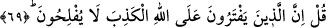
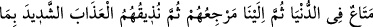
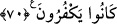

Allah’ın kudretini yetersiz görmüş gibi olur. Bu sebeple de kalbine buna kimin gücü
yetti ve bunu yarattı” gibi boş kuruntular gelir. Sonra da bu düşüncesinde ne kadar hatalı
olduğunu kavrayıp Allah Teâlâ’yı meydana gelmesi uzak görülen acaip bir şey
yaratmaktan âciz olmaktan tenzih etmek maksadıyla “Sübhanellah!” der. Çünkü artık
O’nun gücünün her şeye yeteceğine yakinen inanmaktadır. Şeyhzâde’nin Nasr suresi
hâşiyesinde böyle denilmektedir.
“O” her şeyden “müstağnidir” Hiçbir şeye ihtiyacı yoktur. Bu ifade Allah Teâlâ’nın
münezzeh oluşunun illetini göstermektedir. Çünkü çocuk bir ihtiyaçtan dolayı edinilir.
Zayıflar güçlenmek, fakirler yardımını görmek, zeliller aziz olmak, hakirler de meşhur
olmak için çocuk edinirler. Bütün bu gayeler, ihtiyaç alâmetidir.
“Göklerde ve yerde” akıllı-akılsız “ne varsa, hepsi O’nundur.” Bu, Cenab-ı Hakk’ın
zenginliğini ifade eden, kendisinden başka her şeyin sahibi olduğunu kesin bir dille
anlatmaktadır.
“Bu hususta hiçbir deliliniz yok.” Söylediğiniz bu bâtıl söz ile ilgili hiçbir delil ve
belgeniz yok. “Allah hakkında bilmediğiniz şeyi mi söylüyorsunuz?” Bu ifade
müşrikleri ayrılığa düşmeleri ve bilgisizlikleri yüzünden ayıplayan ve kınayan bir
ifadedir. Burada bütün delilsiz sözlerin cehalet olduğuna, inançların mutlaka kesin bir
delilden kaynaklanması gerektiğine ve itikadi konularda başkasını taklid etmenin caiz
olmadığına dikkat çekilmektedir.
69. De ki: “Allah hakkında yalan uyduranlar, iflah olmazlar.”
“De ki” Allah’ın çocuk edindiğini söyleyip O’na ortak izafe ederek “Allah hakkında
yalan uyduranlar, iflah olmazlar!” Kötü görülen hiçbir şeyden kurtulamaz, elde
edilmek istenen hiçbir şeye asla ulaşamazlar.
70. “Dünyada biraz geçinir, sonra bize dönerler. Sonra da biz inkarlarından dolayı
onlara şiddetli azabı tattırırız.”
“Dünyada biraz geçinir, sonra” ölüm ile “bize dönerler.” Bu ifade gizli bir sualin
cevabıdır. Sanki biri: “Onlar dünyada türlü nimetlerden istifade ettikleri halde nasıl
iflah olmazlar?” diyor da ona cevaben: “Bu istifade dünyadaki az, yokluğa mahkum,
ebedi olmayan bir geçim olup isteneni elde etmek değildir” denmiştir.